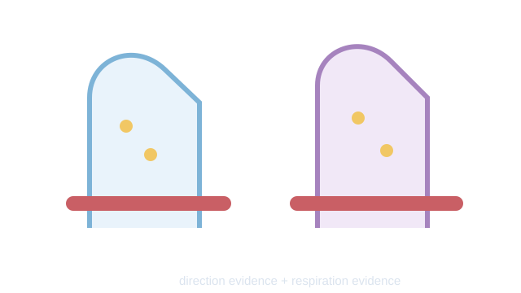

LAUNCH Science · W6L2 · lesson resources
Use two clues
Choose one shared task or resource within the current lesson stage. Keep the lesson’s 40-minute timetable and 15-minute independent work.
We Do · Use two clues
Model values use the same concentration units. Uptake is inwards.
| Context | Outside | Inside | Normal uptake | Inhibited uptake |
|---|---|---|---|---|
| Root nitrate | 2 | 8 | 100 | 15 |
| Gut glucose | 3 | 9 | 100 | 20 |
Use direction and energy evidence. Does the cell’s location alone prove the mechanism?
Discuss, point, write or dictate your first reason. Use one example first; extend only if there is time.
Reveal shared reasoning after an attempt
Both movements are against the gradient; uptake falls when respiration is inhibited. Together these support active transport. Root hair or gut alone does not determine every transport mechanism.
This page keeps your writing while it stays open. It does not save or send it.
Model explanation and diagram

Use two clues: direction relative to the gradient and dependence on respiration. “Root hair” or “gut” alone does not determine every transport mechanism.
Watch for: The gut can use more than one transport mechanism. Here the stated against-gradient uptake and energy evidence support active transport.
Give a smaller support cue
Use two clues: direction compared with the gradient, and what happens when respiration is reduced. Start: “This suggests ___ because…”
Optional video · Active transport
Watch for: What two clues distinguish active transport from diffusion?
Use a short relevant extract within I Do, then pause for an explanation. The clip replaces part of the modelling time.
Open the freesciencelessons video in a new tab
No-video version · use the same question

Active transport causes net movement against the concentration gradient and requires energy released by respiration. The cell type alone does not prove the mechanism.
Internet is needed for the optional clip. It is concept teaching; viewing it is not completion of a practical.